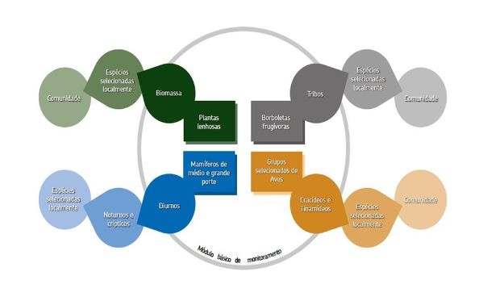
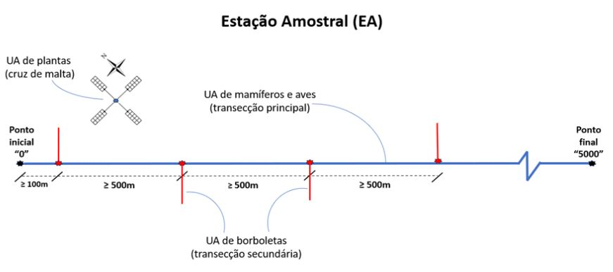
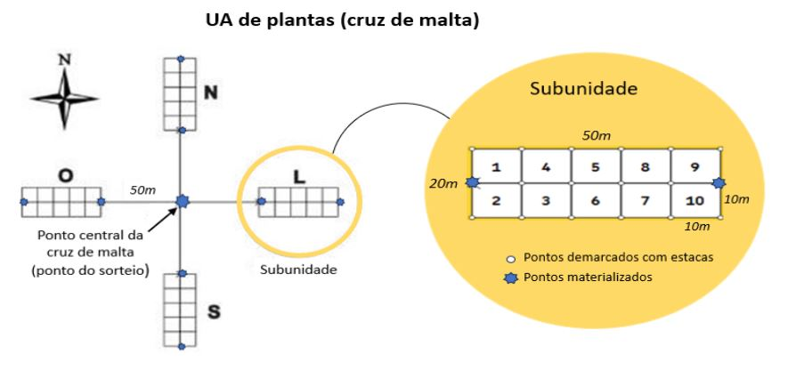
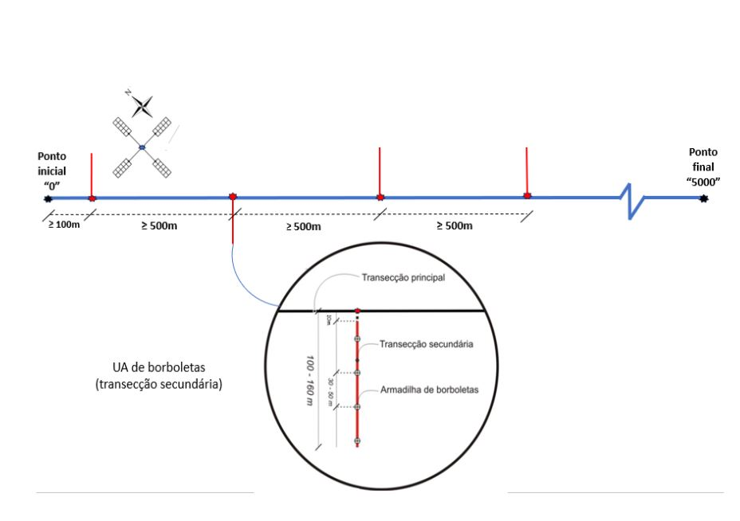
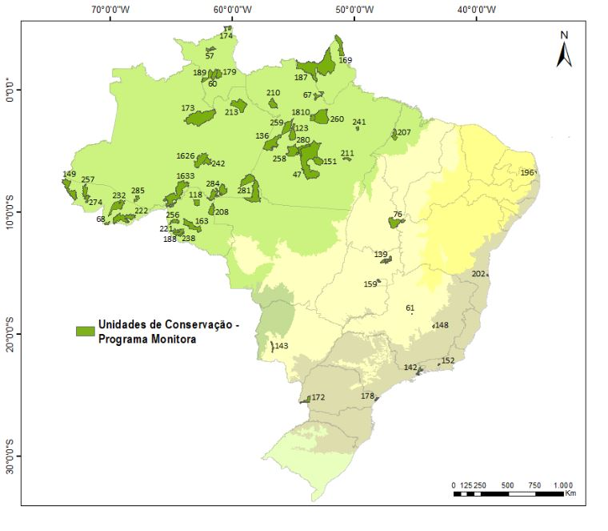

2 Implementação do componente florestal
O texto precisa ser atualizado.
Jumara Marques de Souza & Marcelo Lima Reis
Coordenação de Monitoramento da Biodiversidade - COMOB
Instituto Chico Mendes de Conservação da Biodiversidade – ICMBio
Complexo Administrativo EQSW 103/104 s/n
70670-350 Brasília, DF
A implementação do Programa Nacional de Monitoramento da Biodiversidade - Monitora por uma unidade de conservação federal passa por etapas. Existe um rito ideal a ser seguido, apresentado no documento Guia de Implementação do Programa Nacional de Monitoramento da Biodiversidade (2023). Destaca-se nesse processo a necessidade de envolvimento da UC ou do núcleo de gestão integrada (NGI) e dos demais atores envolvidos, que são: os Centros Nacionais de Pesquisa e Conservação (CNPCs), a Coordenação Geral de Pesquisa e Monitoramento da Biodiversidade (CGPEQ) e a Coordenação de Monitoramento da Biodiversidade (COMOB).
O Monitora está estruturado em subprogramas de acordo com os tipos de ambientes abrangidos. São três subprogramas: Terrestre, Aquático Continental e Marinho e Costeiro. Cada subprograma possui diferentes ecossistemas relacionados, denominados componentes, contendo seus respectivos alvos de monitoramento, que podem ser grupos taxonômicos, grupos funcionais, formas de vida, sistemas ecológicos, hábitats ou ainda processos ecológicos. Os alvos de monitoramento se classificam em dois tipos: globais (Figura 2.1) ou complementares. Eles estão susceptíveis a sofrerem mudanças ao longo do tempo em resposta às alterações no meio ambiente e seu potencial de resposta a essas mudanças é medido por meio do que chamamos de indicadores. Neste relatório são apresentados os resultados dos protocolos básicos do componente Florestal.
2.1 Métodos
2.1.1 A Estação Amostral
Os métodos aplicados podem ser encontrados em detalhe no Monitoramento da biodiversidade: roteiro metodológico de aplicação (2014). Contudo, apresentamos a seguir um breve resumo dos mesmos.
A aplicação dos protocolos básicos do componente florestal passa ela implementação das estações amostrais (EAs). Cada EA está relacionada ao desenho amostral de unidades amostrais (UAs) desenhadas para atender aos alvos Plantas, Borboletas e Mamíferos e Aves (Figura 2.2). E cada UC ou bloco/mosaico de UC deve implementar ao menos 3 EAs, respeitando a distância mínima preconizada estas, e realizar a coleta de dados para todos os alvos. A periodicidade de coleta é anual para Borboletas, Mamíferos e Aves, e a cada quinquênio para Plantas.

Para Plantas (Figura 2.3), a métrica escolhida para o monitoramento de plantas lenhosas é a biomassa vegetal. Para isso, é preciso obter os dados de diâmetro e altura estimada das plantas lenhosas. A coleta de dados ocorre preferencialmente na estação seca e todos os indivíduos que apresentarem um DAP (diâmetro na altura do peito = 1,30 m) maior ou igual a 10 cm (circunferência de 31 cm) ou a 30cm do solo (CAS) ≥ 15cm, esse último para plantas localizadas no bioma Cerrado, são registrados e mensurados.

A métrica de indicação biológica selecionada para borboletas frugívoras (Figura 2.4) é a proporção de indivíduos de cada tribo realizada com o auxílio de guias de campo. A identificação de tribos é muito mais simples e viável que a identificação até espécie das borboletas capturadas. Esse cenário aumenta o potencial de implantação e manutenção do monitoramento. Neste protocolo são utilizadas armadilhas do tipo Van Someren-Rydon (VSR) tendo por iscas banana e caldo de cana. As duas campanhas de coleta de dados se dão preferencialmente ao final da estação chuvosa, em cada campanha são realizadas ao menos três vistorias, intercaladas por até 48 horas.

Para Mamíferos e Aves, a coleta de dados é realizada pelo método de transecções lineares, quando percorrendo-se as transecções se registra todos os indivíduos ou grupos das espécies alvo, especialmente sua localização e distância perpendicular da transecção. As amostragens ocorrem sempre nas primeiras horas da manhã a uma velocidade média de 1,5km/h. E o esforço mínimo desejado para cada unidade de conservação é de 150 quilômetros anuais.
2.1.2 Unidades de Conservação
Três biomas brasileiros, Amazônia, Cerrado e Mata Atlântica, já possuem unidades de conservação que aderiram em algum grau ao monitoramento de alvos do componente florestal do Monitora (Figura 2.5). A adesão ao componente Florestal do Programa Monitora significa que as UCs com representantes capacitados iniciaram a execução do monitoramento, o que incluiu ações como: reunião com o conselho; capacitação local; solicitação da grade do Serviço Florestal Brasileiro (GNPA) e escolha locacional de EAs/UAs. Durante o período de 2013 a 2022, ?? UCs já alcançaram a fase de operação, ou seja, possuem pelo menos um alvo com coleta de dados de campo (?tbl-numero-ucs).

Considera-se que o monitoramento do componente Florestal está consolidado quando as UCs possuem pelo menos três EAs implementadas com todos os alvos de monitoramento com coleta de dados.
| Etapa | 2014 | 2015 | 2016 | 2017 | 2018 | 2019 | 2020 | 2021 | 2022 |
|---|---|---|---|---|---|---|---|---|---|
| Operação | 16 | 13 | 25 | 30 | 34 | 38 | ?? | ?? | ?? |
| Consolidação | 0 | 0 | 1 | 6 | 7 | 14 | ?? | ?? | ?? |
| 2014 | 2015 | 2016 | 2017 | 2018 | 2019 | 2020 | 2021 | 2022 | |
|---|---|---|---|---|---|---|---|---|---|
| EA | 25 | 30 | 51 | 69 | 85 | 95 | ?? | ?? | ?? |
| UA | 44 | 46 | 86 | 143 | 174 | 239 | ?? | ?? | ?? |
Das UCs que já alcançaram a fase de operação, 42 UCs são do bioma Amazônico, seis da Mata Atlântica e seis do Cerrado, e contemplam 18 das 27 unidades federativas do Brasil. Muitas UCs tiveram problemas que causaram descontinuidade no monitoramento (coleta de dados não realizada em um ou mais anos) durante o período 2014-2022. Algumas situações se justificaram pela inadequabilidade dos métodos para o ambiente da UC, especialmente no Cerrado, outras por problemas de ordem logística, pessoal ou financeira.
A execução do monitoramento pelas UCs pode ser gradativa, isto é, pode iniciar com apenas a implantação e coleta de dados de uma EA ou UA e, ao longo do tempo, chegar na fase de consolidação, mas com a recomendação de que isso ocorra em até dois anos. Entretanto, verificou-se que a maioria das UCs, principalmente nos primeiros anos do Programa, precisaram de mais tempo (de 3 a 4 anos) para atingir a fase de consolidação. Espera-se que, nos próximos anos, as UCs consigam atingir a consolidação dentro do período recomendado. É importante ressaltar que as UCs podem ter mais de três EAs implantadas e outras podem não atingir essa meta devido a particularidades locais, como algumas unidades do Cerrado e Mata Atlântica, por suas dimensões, e aquelas que estão fazendo o monitoramento em “bloco” (monitoramento espacialmente compartilhado).
Esse início gradativo do monitoramento também é observado quando comparamos o número de UCs, EAs e UAs em operação ao longo do tempo. No início, a estratégia da maioria das UCs dos biomas Cerrado e Mata Atlântica foi de priorizar a implementação de apenas uma EA com todas as respectivas UAs (alvos), enquanto as UCs amazônicas priorizaram as três EAs, mas não com todos os alvos (trilha ou cruz de malta). A partir de 2016, houve um aumento no esforço de consolidar as EAs com a coleta de dados de todos os alvos, aumentando consideravelmente o número de UAs por UC (Figura x, ?tbl-ucs-componente-florestal). Portanto, da mesma forma espera-se que, nos próximos anos, as UCs consigam aumentar o número de suas EAs e UAs, diminuindo assim a distância entre a linha do acumulado e do esperado.
| Unidades de Conservação | Nº no mapa (CNUC) | Bioma | 2014 | 2015 | 2016 | 2017 | 2018 | 2019 | 2020 | 2021 | 2022 |
|---|---|---|---|---|---|---|---|---|---|---|---|
| ESEC de Pirapitinga | 61 | Cerrado | P, B, M/A | ||||||||
| ESEC Serra Geral do Tocantins | 76 | Cerrado | M/A | P, M/A | P | ||||||
| PARNA da Chapada dos Veadeiros | 139 | Cerrado | P, B, M/A | M/A | B | B | P | ||||
| PARNA da Serra da Bodoquena | 143 | Cerrado | P, B, M/A | P, B, M/A | B, M/A | B, M/A | B, M/A | P, B, M/A | M/A | ||
| PARNA da Serra do Cipó | 148 | Cerrado | P, M/A | M/A | B, M/A | P, B, M/A | B | B | |||
| PARNA de Brasília | 159 | Cerrado | P | B | P, B | B | |||||
| PARNA da Serra da Bocaina | 142 | Mata Atlântica | P, M/A | B, M/A | B, M/A | ||||||
| PARNA da Serra dos Órgãos | 152 | Mata Atlântica | P, M/A | M/A | P, B, M/A | B, M/A | P, B, M/A | ||||
| PARNA do Iguaçu | 172 | Mata Atlântica | B, M/A | B, M/A | B | B, M/A | B, M/A | B, M/A | |||
| PARNA do Superagui | 178 | Mata Atlântica | M/A | M/A | P, B, M/A | P, B | P, B, M/A | P, B | B | ||
| REBIO de Una | 202 | Mata Atlântica | M/A | B, M/A | |||||||
| REBIO Guaribas | 196 | Mata Atlântica | B, M/A | ||||||||
| ESEC da Terra do Meio | 47 | Amazônia | M/A | P, M/A | B, M/A | M/A | B | ||||
| ESEC de Maracá | 57 | Amazônia | P | B, M/A | P, B, M/A | B, M/A | |||||
| ESEC do Jari | 67 | Amazônia | P, B, M/A | ||||||||
| ESEC Niquiá | 60 | Amazônia | P | B, M/A | B, M/A | B, M/A | B, M/A | P, B, M/A | B, M/A | ||
| ESEC Rio Acre | 68 | Amazônia | M/A | B, M/A | |||||||
| FLONA do Jamari | 118 | Amazônia | P, B, M/A | B, M/A | B, M/A | P, B, M/A | B, M/A | M/A | M/A | M/A | B, M/A |
| FLONA do Tapajós | 123 | Amazônia | B, M/A | ||||||||
| PARNA Campos Amazônicos | 284 | Amazônia | P, M/A | B, M/A | B, M/A | ||||||
| PARNA da Amazônia | 136 | Amazônia | M/A | P, B, M/A | B, M/A | B, M/A | B, M/A | B, M/A | |||
| PARNA da Serra do Divisor | 149 | Amazônia | P, B, M/A | P, B, M/A | P, M/A | B, M/A | P, B, M/A | ||||
| PARNA da Serra do Pardo | 151 | Amazônia | M/A | M/A | M/A | M/A | P | ||||
| PARNA de Pacaás Novos | 163 | Amazônia | P, B | B, M/A | B, M/A | M/A | |||||
| PARNA do Cabo Orange | 169 | Amazônia | B, M/A | P, B, M/A | B, M/A | B, M/A | M/A | B, M/A | B, M/A | ||
| PARNA do Jaú | 173 | Amazônia | P | B, M/A | B, M/A | P, B, M/A | B, M/A | B, M/A | B, M/A | P, B, M/A | |
| PARNA do Juruena | 281 | Amazônia | M/A | P, B, M/A | B, M/A | B, M/A | M/A | P, M/A | |||
| PARNA do Monte Roraima | 174 | Amazônia | P, B, M/A | B, M/A | B, M/A | ||||||
| PARNA Nascentes do Lago Jari | 1626 | Amazônia | P, M/A | B, M/A | |||||||
| PARNA do Viruá | 179 | Amazônia | B, M/A | P, B, M/A | B, M/A | B | B, M/A | ||||
| PARNA Mapinguari | 1633 | Amazônia | P, M/A | P, B, M/A | B, M/A | B, M/A | P, B, M/A | P, B, M/A | |||
| PARNA Montanhas do Tumucumaque | 187 | Amazônia | P, M/A | P, M/A | P, B, M/A | B, M/A | B, M/A | B, M/A | P, B, M/A | B, M/A | |
| PARNA Serra da Cutia | 188 | Amazônia | P | B, M/A | B, M/A | B, M/A | B, M/A | B, M/A | B, M/A | ||
| PARNA Serra da Mocidade | 189 | Amazônia | P | B, M/A | B, M/A | B, M/A | B, M/A | P, B, M/A | B, M/A | ||
| REBIO do Gurupi | 207 | Amazônia | M/A | P, B, M/A | P, B, M/A | B, M/A | B, M/A | B, M/A | B | ||
| REBIO do Jaru | 208 | Amazônia | B, M/A | P, B, M/A | B, M/A | B, M/A | B, M/A | B, M/A | P, B, M/A | ||
| REBIO do Tapirapé | ´211 | Amazônia | P, B, M/A | P, B, M/A | B, M/A | B, M/A | B, M/A | B, M/A | |||
| REBIO do Uatumã | 213 | Amazônia | P, B, M/A | B, M/A | B, M/A | P, B, M/A | B, M/A | B, M/A | B, M/A | B, M/A | |
| RESEX Arapixi | 285 | Amazônia | P, B, M/A | M/A | B, M/A | B, M/A | |||||
| RESEX Barreiro das Antas | 221 | Amazônia | P, M/A | P, B, M/A | B, M/A | B, M/A | B, M/A | B, M/A | |||
| RESEX Chico Mendes | 222 | Amazônia | B, M/A | B, M/A | |||||||
| RESEX do Alto Tarauacá | 274 | Amazônia | B, M/A | P, B, M/A | B, M/A | M/A | B, M/A | B, M/A | |||
| RESEX do Cazumbá-Iracema | 232 | Amazônia | P, M/A | M/A | B, M/A | P, B, M/A | B, M/A | P, B, M/A | M/A | B, M/A | B, M/A |
| RESEX do Lago do Capanã Grande | 242 | Amazônia | B, M/A | B, M/A | |||||||
| RESEX do Rio Cautário | 238 | Amazônia | B, M/A | B, M/A | B, M/A | ||||||
| RESEX Ipaú-Anilzinho | 241 | Amazônia | P, B, M/A | B, M/A | B, M/A | B, M/A | |||||
| RESEX Renascer | 1810 | Amazônia | P, B, M/A | B | M/A | B, M/A | |||||
| RESEX Rio Iriri | 280 | Amazônia | M/A | ||||||||
| RESEX Rio Ouro Preto | 256 | Amazônia | P, B, M/A | B, M/A | B, M/A | M/A | B, M/A | B, M/A | |||
| RESEX Riozinho da Liberdade | 257 | Amazônia | P, B, M/A | B, M/A | P, B, M/A | ||||||
| RESEX Riozinho do Anfrízio | 258 | Amazônia | M/A | M/A | M/A | B, M/A | B, M/A | ||||
| RESEX Tapajós-Arapiuns | 259 | Amazônia | M/A | B, M/A | B, M/A | B, M/A | P, B, M/A | B, M/A | M/A | B, M/A | B, M/A |
| REBIO do Rio Trombetas | 210 | Amazônia | M/A | ||||||||
| RESEX Verde Para Sempre | 260 | Amazônia | P, B, M/A |
Para detalhes da implementação dos diferentes protocolos por UC ao longo dos anos veja Apêndice B (verificar com os pontos focais a viabilidade de apresentação desses dados!).
2.2 Resultados da implementação
Nos capítulos seguintes (3, 4 e 5) são apresentados resultados gerais obtidos com a implementação do Componente Florestal do Programa Monitora no período de 2014 a 2022, organizados por alvo e segmentados por biomas, além de informações sobre um algumas espécies ameaçadas. Quando pertinente, resultados parciais e particularidades de algumas unidades de conservação foram também destacadas. Por sua vez, tendo em vista o caráter geral desse relatório, informações complementares e resultados específicos por alvo para cada unidade de conservação serão apresentados futuramente numa plataforma on-line interativa atualmente em desenvolvimento. No capítulo 6 são discutidos alguns padrões de respostas congruentes entre os alvos e suas potenciais correlações.